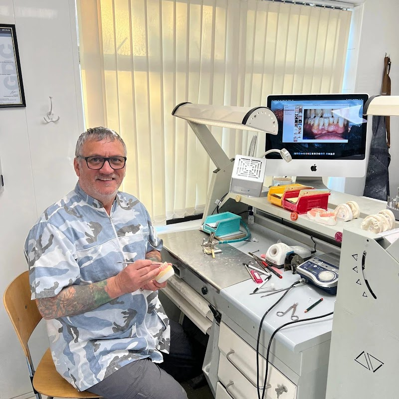

Fast, Reliable Denture Repairs & Additions in South Leeds
Snapped plate, broken tooth, or loose fitting? Bring your denture directly to our Middleton laboratory. Speak directly with our registered dental technicians for rapid while-you-wait repairs, precision acrylic curing, and seamless tooth additions without dental clinic markups.

Meet Your Dental Technician
Direct laboratory communication ensures custom tooth shading, structural strength reinforcement, and anatomical denture fit.
Denture Snapped or Tooth Detached? Please Do NOT Use Superglue.
Household cyanoacrylates dissolve toxic chemicals into your mouth and chemically distort acrylic fracture edges, frequently rendering clean re-bonding impossible. Keep fractured pieces clean and dry in a sealed container and bring them directly to our workbench.
Full-Spectrum Dental Laboratory Services
All acrylic polymerization, cold-cure reinforcement, and tooth shading conducted on-site in Middleton.
Fractured & Split Acrylic
1–2 HoursRe-alignment and vacuum-pressured polymerization of hairline fractures, split palates, and fractured baseplates. Internal stainless steel reinforcement mesh included on high-stress zones.
Detached Tooth Replacement
While You WaitSingle or multiple dislodged teeth re-anchored into dovetail acrylic retention pockets. Multi-layer Vita acrylic tooth shading to match your remaining dentition seamlessly.
Tooth Additions Post-Extraction
Same DayJust had a natural tooth extracted by your dentist? We graft acrylic prosthetic teeth and pink gum base additions onto your current partial plate, usually within 2 to 4 hours.
Ultrasonic Clean & Tartar Removal
30–45 MinsIndustrial ultrasonic cavitation bath dissolves dense calculus, dark nicotine patina, and tea stains. Finished with sterile pumice and high-gloss lathe polish for complete freshness.
Clasp Tightening & Chrome Retention
Fast BenchLoose metal or wrought wire clasps calibrated with dental precision pliers to securely grip natural anchor teeth without stress damage to abutment enamel.
Laboratory Relining
Same DayResurface the tissue-fitting aspect of loose upper or lower dentures to restore suction, comfort, and stability following natural gum shrinkage and bone resorption.
Real Clinical Restorations from Our Middleton Laboratory
Genuine laboratory casework illustrating how advanced ultrasonic cavitation and precise curing restore hygiene, function, and aesthetics.

Severe Tartar & Tobacco De-scale
Patient presented with heavily stained prosthetic gumwork caused by smoking and calcium deposits. Cleaned via enzymatic ultrasonic cavitation bath, followed by pumice scrubbing and clinical gloss polishing. No acrylic loss.
Complete Palatal Fracture Repair
Upper complete denture dropped onto porcelain tiles. Brought directly into Middleton bench. Accurate re-approximation on plaster cast with stainless steel reinforcement wire embedded to prevent recurring flexure fractures.
Upper Lateral Incisor Addition
Following dental extraction earlier that morning, patient walked in with their partial appliance. Exact mould and hue matched from Vita stock, cold-cured and returned the same morning.
Direct Laboratory Service in 4 Simple Steps
Skip dental clinic waitlists. Bring your denture straight to the registered laboratory bench.
Call or Walk In
Call 07780 603944 or drop by directly. Describe the fracture so the bench is prepped and ready for immediate work.
Middleton Drop-off
Visit 12 Middleton Park Ave (LS10 4HP). Free curbside parking right outside with zero steps for easy, senior-friendly access.
Precision Restoration
Our technician casts, reinforces, pressure-cures, and polishes your denture on-site while you wait or relax locally.
Collect & Smile
Collect your denture within 1–2 hours. Fully disinfected, high-buff polished, and restored to full structural strength.
Verified Opening Hours
Unlike standard dental surgeries, our South Leeds dental laboratory is open 6 days a week, including Sunday mornings for urgent weekend dental emergencies.
Clear Laboratory Fees
Because you deal straight with the laboratory technician, you avoid surgery reception surcharges and lengthy courier wait times.
Emergency Fracture / Crack Repair
Simple or complex split re-bonded and pressure cured
Tooth Re-attachment / New Tooth
Includes Vita matching tooth and cold-cure base graft
Ultrasonic Clean & Lathe Pumice Buff
Full stain, calculus, and plaque cavitation removal
Internal Strengthener Wire Mesh
High-tensile stainless steel reinforcement added to break line
100% Free Initial Bench Assessment: We examine your fractured appliance upon arrival with zero obligation.
Convenient Doorstep Access & Parking
Located on Middleton Park Avenue with ground floor step-free wheelchair access and dedicated curbside parking right outside our laboratory door.
Google Plus Code: PFW2+QQ Leeds
Estimated Driving Times to Our Middleton Lab:
Instant Photo & Damage Assessment
Unsure if your fractured plate or cracked tooth can be repaired while you wait? Send a quick photo straight to our workbench.
1. Photograph the Fracture
Snap a clear photo of the cracked plate or broken tooth against a neutral surface.
2. Direct WhatsApp / SMS
Send images to +44 7780 603944 for an immediate estimate of time and exact cost.
3. Rapid Bench Response
Technician usually replies within 15–20 minutes during laboratory operating hours.
Frequently Asked Questions
Everything you need to know about our direct while-you-wait laboratory repairs.
No referral is required. Under UK dental regulations, dental technicians can carry out denture repairs, tooth re-attachments, and ultrasonic cleans directly for the general public. Simply drop into 12 Middleton Park Ave or call us first.
Most standard midline cracks, complete snapped palates, or single tooth replacements take between 45 minutes to 90 minutes. You are welcome to wait in our comfortable reception or take a short walk while our technician pressure-cures and buffs the acrylic.
Yes! Our Middleton bench is open on Sundays from 10:00 am to 3:00 pm specifically to assist people who suffer unexpected weekend fractures and cannot wait until Monday morning.
Yes. Because we use pressurized cross-linking polymer curing rather than temporary adhesives, the re-bonded seam achieves full structural strength before you leave our laboratory. It is ready for normal eating and chewing immediately.
Do not worry. We stock hundreds of Vita dental acrylic prosthetic teeth covering all standard European dental shapes, widths, and hues. We will shade-match and set a brand-new tooth directly into your baseplate.
Don't spend another day struggling to eat or smile.
Drop into our Middleton laboratory today. Fast while-you-wait emergency repairs, direct dental technician advice, and genuine craftsmanship.